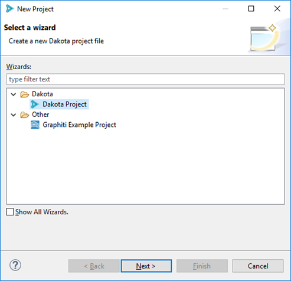
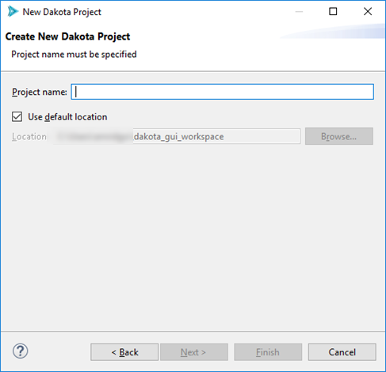
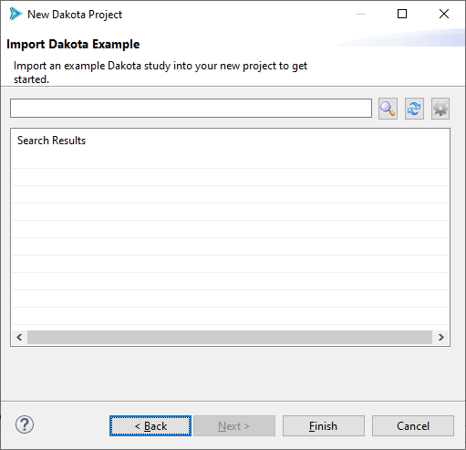

New Dakota Project
You can create a new Dakota project using the Dakota Project wizard.
Go to File > New > Project, then select Dakota > Dakota Project from the available options:
Page 1 (Create New Dakota Project)
On the first page, put the name of your new project in the “Project name” field.
At this point, you may either choose to click Finish, or proceed to the optional second page to import a Dakota example into your new project.
Page 2 (Import Dakota Example)
The second page of this wizard allows you to import a fresh Dakota example from the examples repository into your new project.
Note
Depending on whether your version of Dakota GUI is configured to access the Dakota team’s online repository or the set of offline examples shipped with Dakota, the controls on this page will look slightly different. Please see the documentation on Dakota Examples for more information.